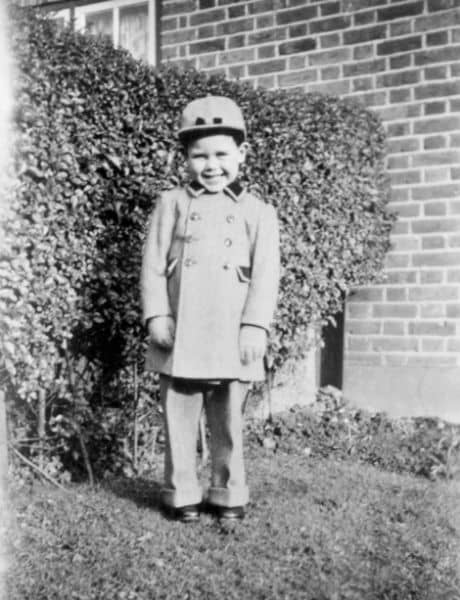
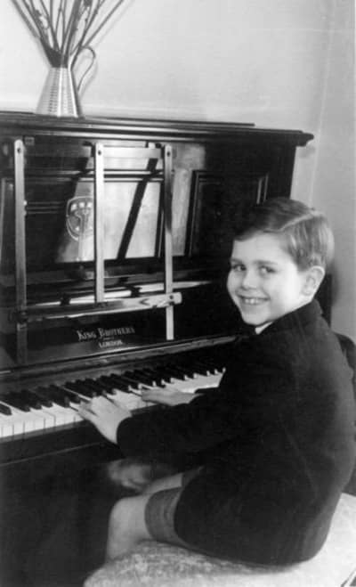
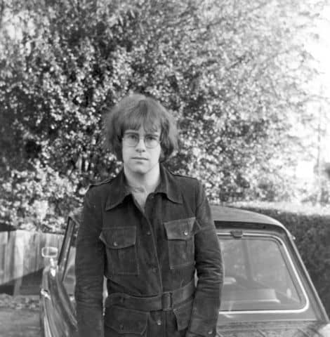

Sir Elton Hercules John, CBE, es uno de los artistas solistas más aclamados por la crítica y exitosos de todos los tiempos.
Elton ha logrado dos álbumes de diamante, 43 de platino o multi-platino y 26 de oro, más de 70 éxitos en el Top 40, y ha vendido más de 327 millones de discos en todo el mundo. Posee el récord del sencillo físico más vendido de todos los tiempos, Candle In The Wind 1997, que vendió más de 33 millones de copias. Desde que inició su primera gira en 1970, Elton tiene en su haber más de 4,600 presentaciones en más de 80 países.
Elton es el artista solista masculino más exitoso en la historia de las listas de éxitos estadounidenses y el tercer artista más exitoso en general, superado únicamente por Madonna y los Beatles. Registró 67 entradas en la lista Hot 100 entre 1970 y 2000, incluyendo nueve números 1 y 29 éxitos en el top 10. Consiguió siete álbumes número 1 en un período de tres años y medio, desde 1972 hasta 1975, un lapso de éxito concentrado que solo ha sido superado por los Beatles.
Elton nació el 25 de marzo de 1947 en Pinner, Middlesex, Inglaterra, y recibió el nombre de Reginald Kenneth Dwight. A los tres años de edad, asombró a su familia al sentarse frente al piano y tocar de oído The Skater’s Waltz (El vals de los patinadores). A los 11 años, se le otorgó una beca como estudiante destacado menor (Junior Exhibitor) en la Royal Academy of Music, y asistió a la Academia los sábados por la mañana durante los siguientes cuatro años.
Además de su título de caballero (Knighthood), los premios más emblemáticos de Elton incluyen el Premio BRIT al Mejor Artista Masculino Británico en 1991; el Salón de la Fama de los Compositores (junto a Bernie Taupin) en 1992; Oficial de las Artes y las Letras (Francia) en 1993; la inducción al Salón de la Fama del Rock and Roll en 1994; el Premio de Música Polar en 1995; Persona del Año de MusiCares en 2000; el Reconocimiento del Centro Kennedy en 2004; el Premio Leyenda de la Música en Vivo de la revista Billboard en 2006; el Premio Johnny Mercer del Salón de la Fama de los Compositores (junto a Bernie Taupin) en 2013; el Premio Icono de los BRITs en 2013; el Premio a la Trayectoria de la Fundación Rockefeller en 2013 y el Premio al Liderazgo de la Iniciativa contra el SIDA de la Escuela de Salud Pública de Harvard en 2013. En 2002, se le concedió un doctorado honoris causa por la Royal Academy of Music y en 2004 se convirtió en miembro de la Academia Británica de Autores y Compositores.
Elton ha ganado 13 Premios Ivor Novello entre 1973 y 2001, ha sido nominado al Premio Grammy en 11 ocasiones (ganando en 1986, 1991, 1994, 1997 y 2000), y recibió el Premio Grammy Legend en 2001. Tres de sus álbumes han sido incluidos en el Salón de la Fama de los Grammy, incluido su álbum homónimo de 1970. Elton tiene 4 nominaciones al Premio Oscar (ganando en 1995 y 2020), y un Premio Tony (con 4 nominaciones) a la Mejor Banda Sonora Original por Aida de Elton John y Tim Rice en el año 2000.
En enero de 2024, Elton se unió al selecto grupo "EGOT" (Emmy, Grammy, Oscar y Tony) de Hollywood tras conseguir su primer Premio Emmy por su especial de concierto en vivo para Disney+, “Elton John Live: Farewell from Dodger Stadium”.